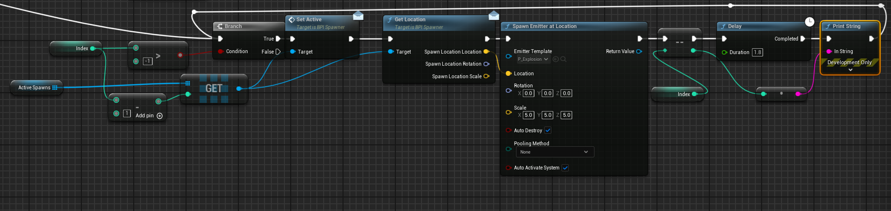
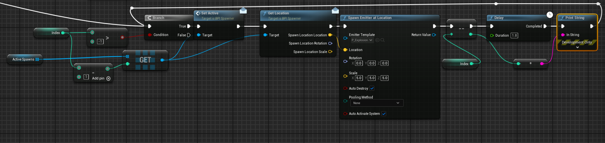

Nickolas Rau
Game Developer | Programmer | Designer
Game Developer | Programmer | Designer

This is a third-person shooter survival game completed during an apprenticeship for Prosper IT Consulting where I participated in Agile/Scrum practices by completing user stories to deliver a functional MVP game in Unreal Engine version 5.3. This turned out to be an amazing proof of concept that I will likely continue learning and iterating on in the future. It was aimed at a target audience of former Call of Duty Zombie players where we saw play sessions exceeding 5 hours on twitch. I was fully responsible for every aspect of the game's development including concept, planning, design, animation, and programming. Nearly every feature/mechanic included had to be referenced from Unreal's documentation, forums, or tutorial guides as this was my first game in Unreal Engine. The project is nowhere near perfect and many times I just needed to get something working to move forward. Completing this game, however, taught me better development skills which I will continue building upon.


I began with white boarding the set of outcomes I wanted the player to experience. I knew the target audience was already familiar with the concept of hoarding up enemies and killing them so I wanted to innovate on difficulty parameters while also creating as many close encounter situations as possible.
Most important was to understand how these situations are created. To the right, I attempt to illustrate that maneuvering around enemies is significantly more impactful when:
At first I designed a scenario where there would be spawns that move
into positions each wave to “set-up”. Similar to
vehicles moving around the parameter and “parking.” This might be beneficial in the future but
would have required too
much effort for a concept I first needed to prove.
I simplified the system by having static spawns around the map
that would randomly “activate” for the wave. Iterating through play testing I added directional sounds,
particle effects, and glowing
material to the spawns to help telegraph to the player where the enemies would be
coming from.
I designed a map for the player that took into account open areas, narrow paths, and item locations.
I began with outlining wave-specific goals I wanted the player to experience. Specifically:
With these in mind, I tailored the gameplay experience. Through hours of playtesting and iteration I determined exactly how many enemies to spawn, focusing on their health, speed, and spawn rate for each wave. Often, initially doubling the number so the player could instantly see the increase without any discrepancies.
After clearly defining the amount of enemies along with their health, it became much simplier to calculate the minimum amount of points (killing enemies without headshots) the player will have after each wave. This gave a baseline to price buyable objects to meet the wave-specific goals. Notice above how a price of 2500 seemed fitting for the first item since the minimum amount of points gathered would be 2660. By making all buyables initially 2500, the player then has meaningful choices to make. Also, if the player prioritizes heashots and doesn't buy as much health, they will be rewarded by getting upgrades faster and thus making survival easier.
Through iterative playtesting I refined most of the gameplay experience:


I worked with the weapon skeletal mesh to create animations for a firing sequence as well as attaching it to the character mesh by adding sockets. From there I used blueprints to write functionality for firing when the shoot button was pressed. Once pressed, I played the animations and called a custom line trace function I wrote. The line trace would add variability depending on if the player was aiming or hip firing. Then, it would check the surface material hit to spawn a particle in for the matching material type.

Shoot Logic
Line Trace
Break Hit Results


Since I initially had the start position of the line trace at the muzzle of the gun, there would be many situations where traces towards closer objects would hit without the crosshairs being over it. This wasn't telegraphed well to the player and I personally found it frustrating when missing enemies because they were too close to me. To fix this I calculated the center point of the screen and projected it to world space for the start position. With that, the trace would always hit what the crosshair was hovered over, eliminating any discrepancies.
Through playtesting I found gameplay to feel clucky with having to manually hit the reload button when the clip was empty. So I added a call to my reload function if the ammo was empty and the player still held down the button.
Had to do a lot of debugging to ensure the player reloads the certain amount of ammo correctly. I found there were certain edge cases initially where they player would lose more ammo than intended. This was solved by always calculating the amount of ammo used in the clip before reloading. This allowed successful reloads without unintentional or missing ammo. All variables regarding ammo can be changed and this still functions properly.


The way I called the animation function worked but if I had to do it again I would try having all the logic on the reload animaton itself. I would use a notify on the frame the magazine is put into the gun to call a function that refills the ammo. That way if I wanted to change the reload speed, I would only need to change the animation playrate. Currently, I have to change both the playrate and the delay node when I want to alter the reload speed.
I initially casted to the third person character on event overlap. However, I learned how costly that can become so I implemented custom interfaces to display text to the player's HUD on overlap events, regardless of the player's screen direction. This aligned more with the flow of the game and ensured the player retained their momentum. This is different than most interactable systems where a line trace is used to detect if the player is looking at the object.


Each object had their own variables and custom text, then when an actor that implemented the correct interface overlapped with it, it would call the display function.
Buy was called if the player pressed F and the canBuy function returned true.

Enemy Attack Logic

Take Damage Logic
Enemy Die Logic


I wrote a function that would loop through all spawns available in the map and randomly select the amount to activate (6 on wave 6). These selected spawns were then added to an array, and after the "Wave Incoming" text disappeared, would loop through each one playing a sound with partcile effect.
To achieve a fast, noticeable, scaling of difficulty that allowed for rapid changing to variables during iterative play testing, I built a function that would switch the wave number and set all difficulty parameters. This allowed for Individual tweaks to difficulty while also setting a linear progression after wave 7.

I wrote spawn logic that would be called at the start of each new wave, and check to see if more enemies needed to be spawned after one died. To do this I kept track of the total amount of enemies in the wave as well as the total amount to spawn in at one time. Then to increase the difficulty I promoted the delay between each spawn into a variable that is modified in the wave logic.
I ran into significant issues trying to implement a delay using a for loop. When a wave started, all spawns would activate at the same time. Through debugging and researching online, I found out that Unreal Engine’s node macro iterates through all elements of an array and then outputs. This was a problem if I wanted to add a delay with sound and particle effects after each element so that the player would have proper time to prepare. To achieve this functionality, I implemented a branch with a counter set to the size of the array holding the spawns to activate.
 



Building the main menu scene was particularly fun for me as I got to be creative by coding enemies to go by the window outside the player. Coded to have random variations so it doesn't feel as scripted, gives a nice feeling of immersion on the home screen.